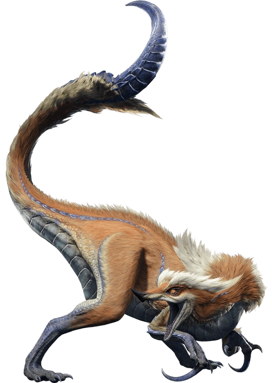
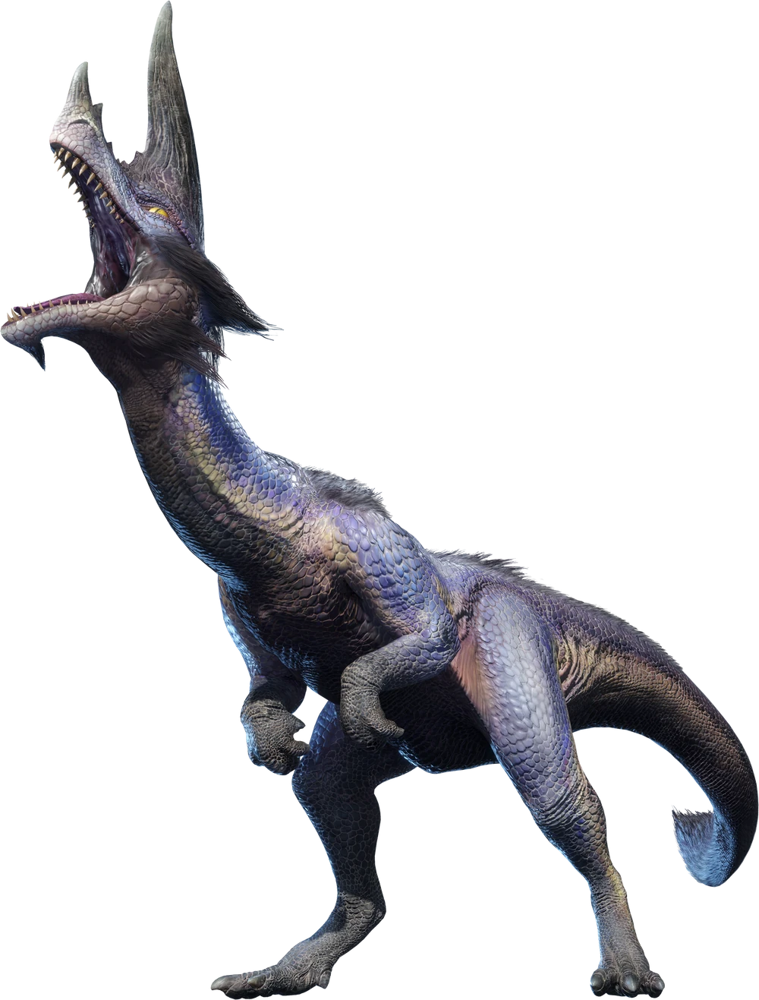
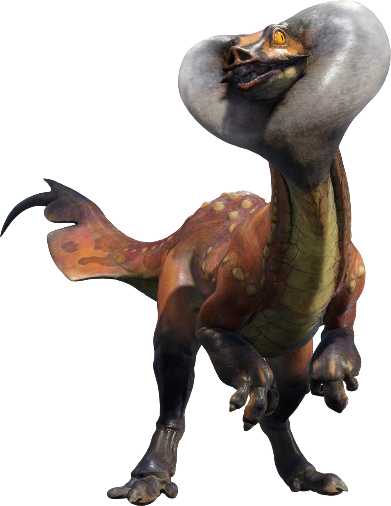
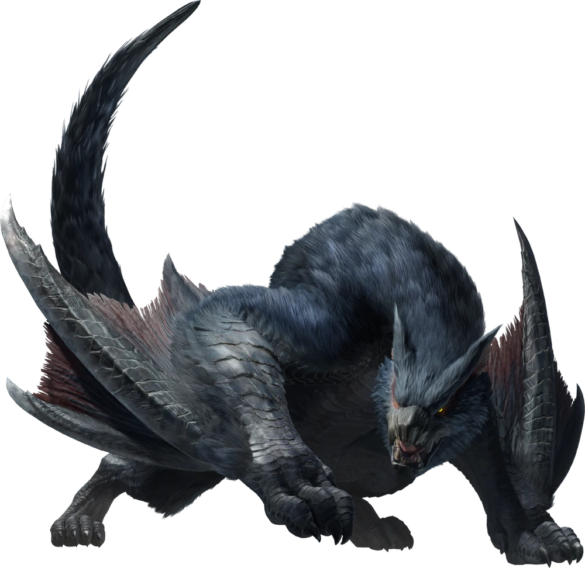
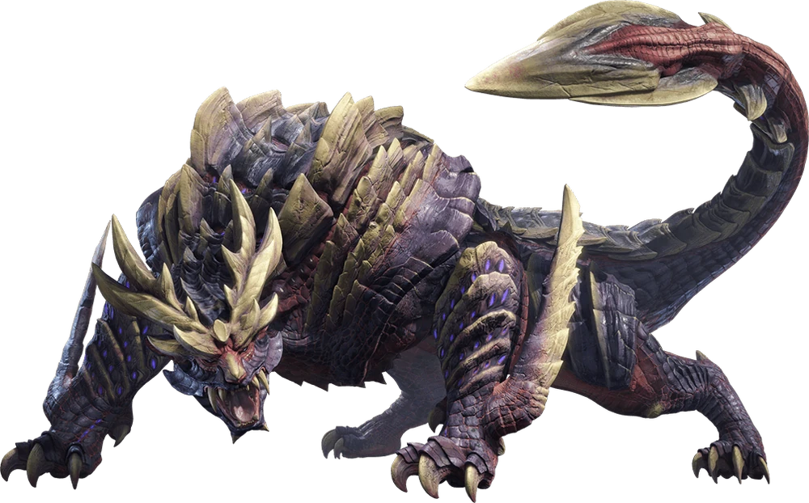
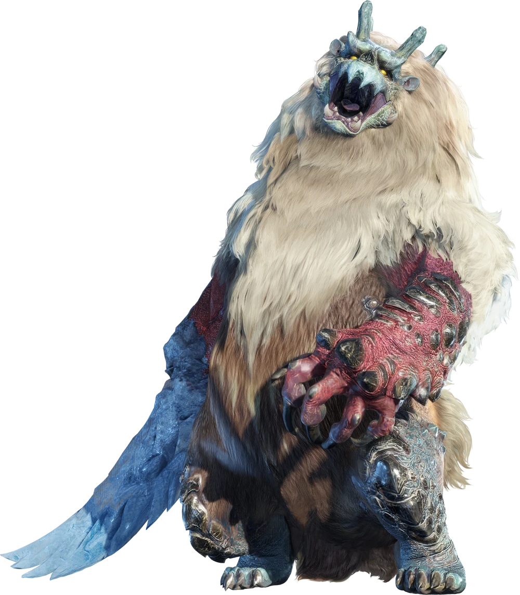
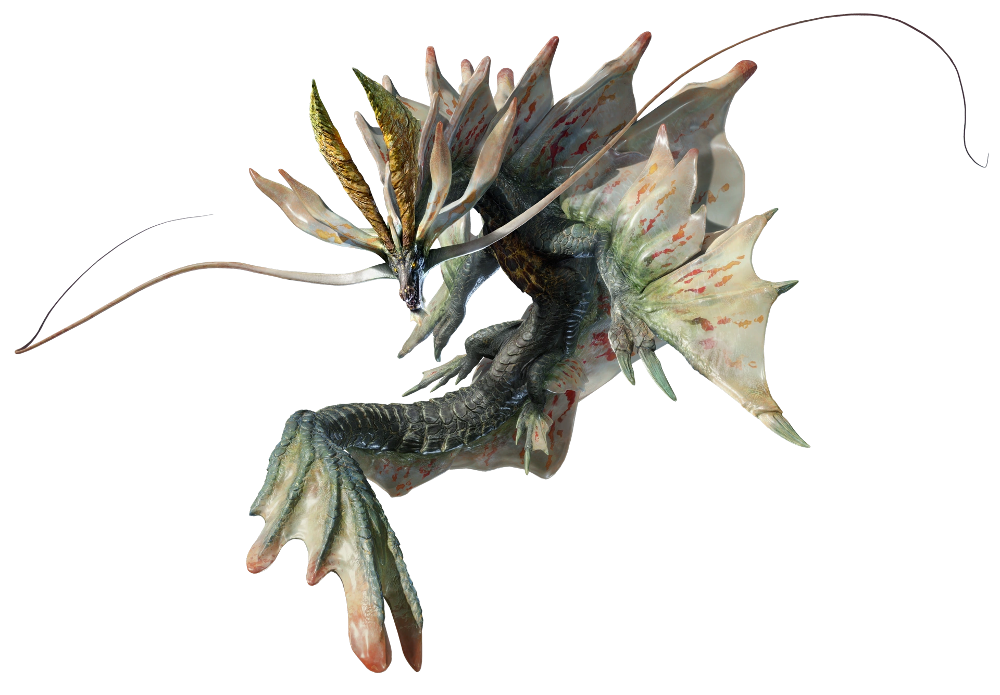
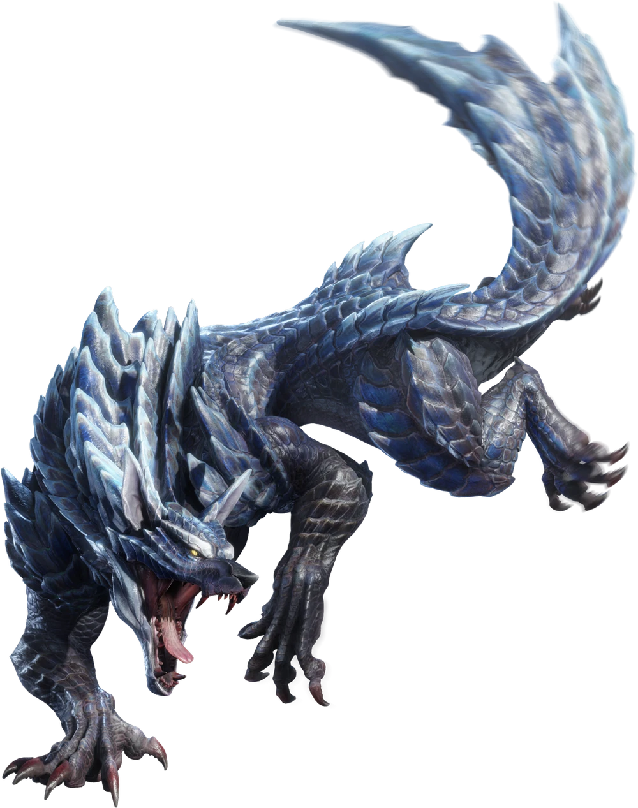

Great Izuchi
The Great Izuchi is the alpha of its pack, identified by its larger build, upended white fur, and
scythe-like tail. A Great Izuchi forms a herd of many smaller Izuchi and selects two from the group to
accompany it on territory patrols. Once it spots its prey or senses danger, the Great Izuchi issues
commands
to its fellow Izuchi and coordinates their movements. Take care that you don't get overwhelmed!

Great Baggi
A carnivorous bird wyvern.
Noted for their projecting cranial crests and bluish-white skin that's adapted to snowy climates.
Great Baggi craftily command other Baggi to surround their prey and stun them with a tranquilizing
fluid.

Great Wroggi
Wroggi are bird wyverns that travel in packs that are led by the largest and most toxic member. Be
careful
when one raises its head and its poison sac expands -- that signals that it's about to spit a cloud of
poisonous mist.

Nargacuga
Flying wyverns that have evolved to live in thickly wooded areas. Covered in jet black fur, these
cunning
predators stalk their prey from the shadows and attack with ferocious speed. Their massive tails are as
dexterous as they are deadly, and powerful enough to slay smaller monsters with one strike.

Magnamalo
Magnamalo is a monster with a carapace like tempered steel armor. The vapor around it is actually the
expelling of trapped gases from the hordes of monsters Magnamalo has consumed. This has earned it the
moniker "Wyvern of Malice." Its shrouded swings can inflict hellfireblight, which causes one to combust
either spontaneously or when hit. Use a Deodorant or a Wirebug to rid yourself of hellfire.

Goss Harag
A monster native to ice-cold climates. Covered in fur so thick it keeps out the harsh frost, it roams
the snowy plains in search of prey. It can inhale the cold air to freeze its own bodily fluids and then spit
them out to create icy blades on its arms. When riled up, the Goss Harag turns red and becomes
exceedingly
dangerous.

Amatsu
An elder dragon that can manipulate the weather and are able to conjure up unrelenting gales. Amatsu glides
through the air on currents they create using their wing membrane, making it look as if they're dancing in
the sky. The storms they summon are extremely destructive and can lay entire cities to waste, thus they are
known as the "Looming Calamity." When enraged, their storms become even more violent, enveloping the area
with unrelenting lightning strikes.

Lunagaron
Lunagarons have an organ that chills the air they inhale, circulating it throughout their body in a unique
form of thermo-regulation. They can travel long distances and endure environmental changes, allowing them to
occupy a wide range of habitats. They usually walk on all fours, but can stand on two legs by shutting down
their cooling mechanism, spiking their body temp to expand their muscles.